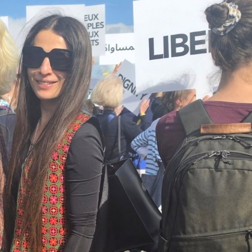

Program Support
Support initiatives focused on women, youth, resilience, civic participation and community action.

Takadom’s work is strengthened by collaboration with civil society organizations, foundations, institutions, donors and peacebuilding networks.
We welcome relationships that expand opportunities for women and youth, support resilient communities and connect local experience with broader networks.
Takadom for Peace is a member of the following networks and initiatives. Membership is distinct from a partnership or project collaboration.

Takadom has participated in international forums and conferences to highlight the experiences and priorities of Palestinian women and youth, strengthen cooperation and advocate for inclusive approaches to peacebuilding and social development.
Discuss a Partnership →Support initiatives focused on women, youth, resilience, civic participation and community action.
Co-design activities, exchange expertise and connect Takadom with wider networks and opportunities.
Create opportunities for Palestinian voices and local experience to inform wider conversations.